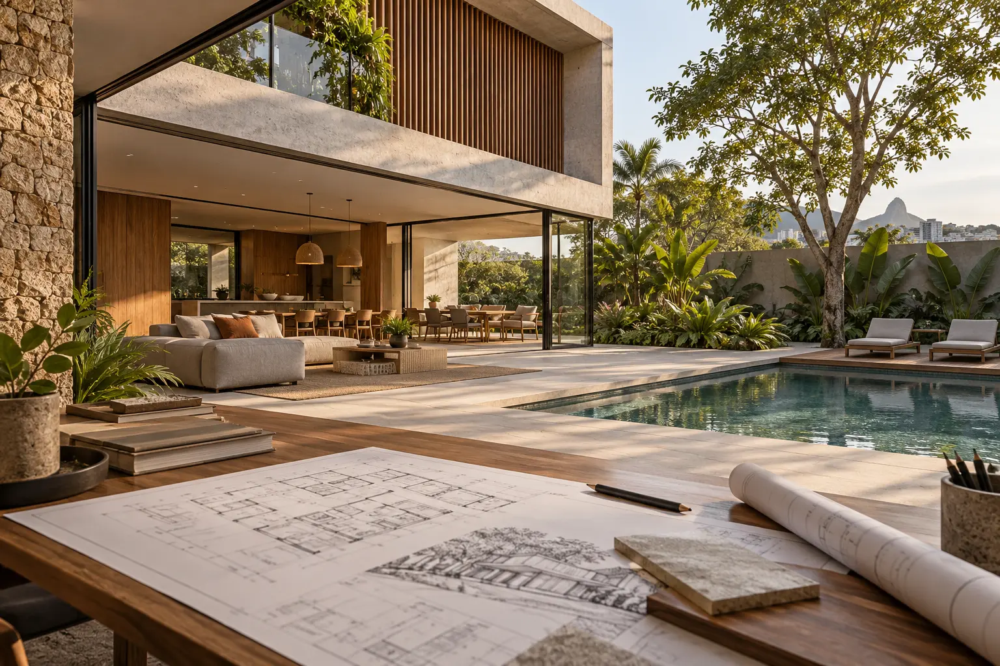
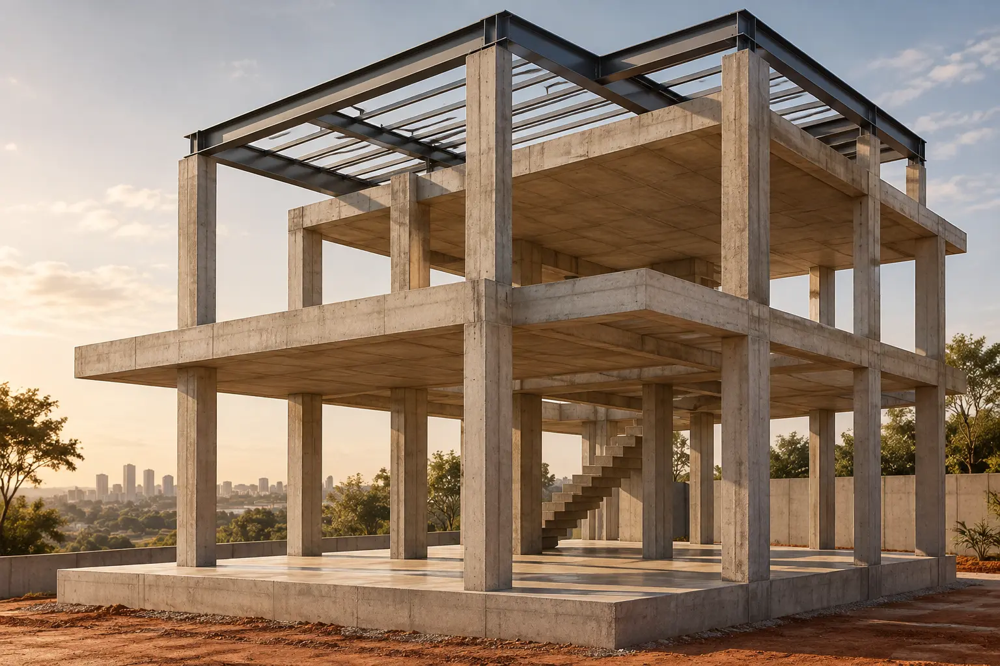

O que fazemos
Do primeiro traço à documentação final do imóvel.
Engenharia e arquitetura conduzidas de forma integrada para projetar, avaliar, acompanhar e regularizar imóveis com segurança e clareza.
Conversar sobre meu imóvel →


Projetos • Laudos • Regularização
01
ArquiteturaEspaços funcionais, bem resolvidos e pensados para quem vai usar.
Desenvolvemos projetos arquitetônicos residenciais e comerciais, conciliando necessidades, legislação, estética e viabilidade construtiva.
- Estudo preliminar e definição do programa
- Projeto legal para aprovação
- Projeto executivo e detalhamentos
- Reformas, ampliações e adequações
Engenharia e acompanhamento técnicoDecisões técnicas mais seguras durante a obra.
Acompanhamos etapas importantes da construção e orientamos soluções para reduzir improvisos, incompatibilidades e retrabalhos.
- Visitas e acompanhamento técnico
- Administração e planejamento de obra
- Compatibilização entre projetos
- Orientação para reformas e intervenções
03
Laudos e consultorias técnicasInformação técnica para decidir antes de intervir.
Inspecionamos a situação existente, registramos evidências e apresentamos orientações compatíveis com o objetivo de cada contratação.
- Vistoria cautelar de vizinhança
- Laudos de acessibilidade
- Avaliação de manifestações patológicas
- Análise de estruturas, vãos e contenções
Projetos elétricosInstalações dimensionadas para segurança, uso e manutenção.
Planejamos pontos, circuitos, quadros e proteções conforme as necessidades do imóvel, com documentação clara para a execução.
- Distribuição de tomadas e iluminação
- Quadros, circuitos e proteções
- Dimensionamento de condutores
- Documentação para execução
05
Projetos estruturaisSegurança estrutural acompanhada de detalhamento executável.
Projetamos estruturas em concreto armado, aço e alvenaria estrutural, considerando o comportamento da edificação e as condições reais da obra.
- Concreto armado e fundações
- Estruturas metálicas
- Alvenaria estrutural
- Análise e reforço de estruturas existentes
Projetos hidrossanitáriosRedes organizadas para funcionar bem e permitir manutenção.
Dimensionamos água fria, esgoto sanitário e águas pluviais de forma compatível com a arquitetura e a estrutura do imóvel.
- Distribuição de água fria
- Coleta e ventilação de esgoto
- Drenagem de águas pluviais
- Detalhes e especificações executivas
07
Redução de INSS de obrasAntes de recolher, analisamos o cenário da obra.
Avaliamos período, área, documentação e enquadramento para identificar caminhos legais aplicáveis à aferição e evitar pagamentos sem análise prévia.
- Análise do CNO ou CEI
- Aferição da obra pelo SERO
- Verificação de decadência e documentos
- Planejamento da regularização fiscal
08
Regularização na PrefeituraA realidade construída precisa estar compatível com o cadastro municipal.
Levantamos o imóvel, verificamos a viabilidade e conduzimos os documentos técnicos necessários conforme as regras do município.
- Levantamento cadastral do imóvel
- Projeto de regularização
- Alvará e aprovação municipal
- Habite-se ou documento equivalente
09
Regularização na Receita FederalDa inscrição da obra à certidão fiscal necessária.
Organizamos as informações da construção e orientamos as providências fiscais aplicáveis para concluir a etapa federal da regularização.
- Inscrição, retificação ou cancelamento de CNO
- Aferição pelo SERO e DCTFWeb
- Análise das contribuições da obra
- Emissão da CND ou certidão aplicável
10
Regularização no Cartório de ImóveisA construção também precisa aparecer corretamente na matrícula.
Orientamos a documentação necessária para averbar a edificação e atualizar o registro do imóvel após as etapas anteriores.
- Conferência da matrícula
- Organização dos documentos da construção
- Averbação da área edificada
- Atendimento a exigências registrais
Não sabe por onde começar?Faça o diagnóstico inicial da regularização.
Responda perguntas simples e receba uma orientação preliminar sobre Prefeitura, Receita Federal e Cartório.
Diagnóstico de regularização →